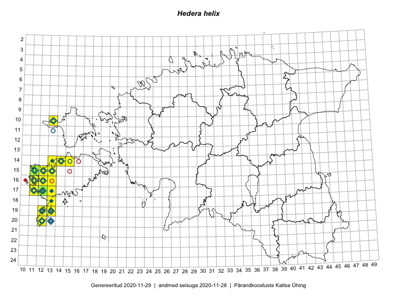

Hedera helix
Uuendatud: 2016-12-08
Kaardile koondatud taksonid: Hedera helix L.

Kaart põhineb 17 vaatlusel. Taime on leitud 10 ruudust.
| Ruut | Vaatleja(d) | Vaatlusaeg | Kirje tüüp | Viide andmebaasikirjele |
|---|---|---|---|---|
| 19-13 | Oliver Parrest | 2015-07-01 | ruut/ala | vaata PlutoFis |
| 17-12 | Mari Reitalu | 2015-08-25 | ruut/ala | vaata PlutoFis |
| 19-12 | Oliver Parrest | 2015-08-18 | ruut/ala | vaata PlutoFis |
| 15-12 | Mari Reitalu, Oliver Parrest | 2015-07-14 | ruut/ala | vaata PlutoFis |
| 15-11 | Mari Reitalu, Oliver Parrest | 2015-07-16 | ruut/ala | vaata PlutoFis |
| 18-13 | Mari Reitalu, Oliver Parrest | 2015-05-27 | ruut/ala | vaata PlutoFis |
| 17-11 | Mari Reitalu, Triin Reitalu | 2015-05-10 | ruut/ala | vaata PlutoFis |
| 16-12 | Mari Reitalu, Triin Reitalu | 2015-04-30 | ruut/ala | vaata PlutoFis |
| 15-12 | Mari Reitalu, Oliver Parrest | 2015-07-14 | punkt | vaata PlutoFis |
| 15-11 | Ott Luuk | 2015-09-15 | punkt | vaata PlutoFis |
| 16-12 | Triin Reitalu, Mari Reitalu | 2015-04-30 | punkt | vaata PlutoFis |
| 17-11 | Triin Reitalu, Mari Reitalu | 2015-05-10 | punkt | vaata PlutoFis |
| 16-11 | Triin Reitalu, Mari Reitalu | 2015-05-28 | punkt | vaata PlutoFis |
| 19-13 | Oliver Parrest | 2015-07-01 | punkt | vaata PlutoFis |
| 20-12 | Oliver Parrest | 2015-08-15 | punkt | vaata PlutoFis |
| 18-13 | Oliver Parrest, Mari Reitalu | 2015-05-27 | punkt | vaata PlutoFis |
| 15-11 | Oliver Parrest, Mari Reitalu | 2015-07-16 | punkt | vaata PlutoFis |